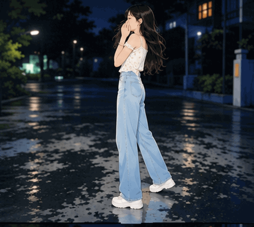

Dear Miss Shreya,
If I could put my feelings into words, this little corner of the internet would be where I would begin.
There's something for you ↓Some things are easier to write than to say.
Not every special moment needs a photograph. Some are remembered by the heart.

A moment worth rememberingSome memories live beyond photographs.
Sometimes, even an ordinary moment, like a glance, can becomes a beautiful part of the day.
Those little moments that bring a smile without needing any particular reason.
The moments that remind us how meaningful even the smallest connections can be.
A smile that can make an ordinary moment feel a little brighter.
The kind of presence that makes some moments worth remembering.
There is something wonderful about being simply and genuinely yourself.
Dear Miss Shreya,
If my words or actions have hurt you in any way, I sincerely apologise.
I understand that an apology is more than simply saying the words "I'm sorry." It means acknowledging my mistakes, understanding your feelings, and making a genuine effort not to repeat them.
I cannot change what has already happened, but I can certainly learn from it. I never intended to make you feel uncomfortable by glancing at you frequently. If my behaviour made you uncomfortable in any way, I truly regret it.
I am not writing this to put any pressure on you or to expect anything in return. I simply wanted to express what is in my heart and sincerely acknowledge how you might have felt.
I respect your feelings, your comfort, and your personal space. I genuinely wish you happiness and peace.
May your days be filled with genuine smiles, peaceful moments, beautiful dreams and all the happiness you deserve.